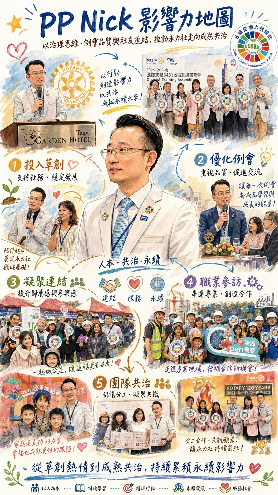

At the Club's regular meetings, whenever PP Nick steps to the master of ceremonies' podium, the air changes.
Laughter flows naturally, the distance between members shortens, and newly joined companions are warmly received. That is not a performance, but a sense of interpersonal perception and organizational sensitivity accumulated over many years.
"Sustainability means letting good value endure over the long term."
"Impact is quietly changing the direction of people and society through the accumulation of time."
These two sentences can almost be read as a commentary on his personal action.
PP Nick was formerly President of the Qunying Rotary Club. He already had complete experience within an existing club system. Yet when CP Impact invited him to help co-found the Club, he chose to commit again.
This was not simply joining a new club, but a decision to start over from zero.
What he hoped for was not short-term enthusiasm, but a Rotary club with a sound system, mature operations, and a true core of "sustainable impact."
He saw the smooth progress of the founding period: a clear ESG thematic positioning, the joining of like-minded people, and a lively meeting atmosphere. But he knew more clearly that the real challenge lies not in "starting," but in "whether it can last."
In his professional field, PP Nick is not a loud advocate, but a structural practitioner. His company mainly engages in:
This is an industry traditionally high in material consumption and waste. He did not stop at "doing good design," but proactively considered: could visual marketing also move toward sustainability?
These all mean increased costs and higher communication costs. But he still chose to do them.
The most crucial change is that he made "the sustainable option" a standard part of the quote. Not an add-on purchase, but a basic option.
This small design change in fact produced a structural impact in commercial negotiations.
Even more important is the shift in mindset. Clients began to ask proactively, "Can this catalog add an environmental label?"
When the brand side raises sustainability first, it means value has entered the decision-making level. This is exactly the impact he understands. Quietly changing direction over time.
Aligned SDGs: SDG 12 Responsible Consumption and Production, SDG 17 Partnerships.
If his professional field is his external impact, then in the Club, his core contribution lies in culture and climate.
"The foundation of organizational governance lies in members' sense of belonging."
Many organizations talk only of systems, processes, and KPIs, yet overlook that a sense of belonging is the hidden cost.
He uses humor to adjust the pace, keeping formal procedures from losing warmth. To outsiders the master of ceremonies role seems a formality, but in how the organization runs it is a node. He knows how to:
These are all "soft governance."
He believes the greatest challenge for a new club is "building consensus."
Everyone agrees with the ideal of sustainability, but ways of practicing it differ. This is a process every theme-based club must go through.
His suggestion is to establish a "care group system." Through group-based operation: layered responsibility, immediate response to members' needs, and operation as a set of gears.
This is a kind of distributed leadership thinking. Not the President carrying it alone, but collective drive.
PP Nick's impact lies not at center stage, but in the atmosphere of the stage. Not in volume, but in steadiness.
He is not the person who creates a spike, but the person who lets the organization operate over the long term. This kind of impact is often hard to quantify, yet is crucial to the organization.
In ESG terms:
His definition of sustainability is:
Letting good value endure over the long term.
This sentence is not ornate, yet very deep.
Everything he does, from transforming the design industry to creating the atmosphere of meetings, in fact answers the same question, "Can this thing go far?"
This long-term thinking is exactly the core of sustainability.
In the founding stage of the Club, perhaps projects will be remembered and numbers will be seen. But what truly holds up an organization's steadiness is often a person like PP Nick.
Quiet, humorous, steady, long-term.
He gives good value the chance to endure.